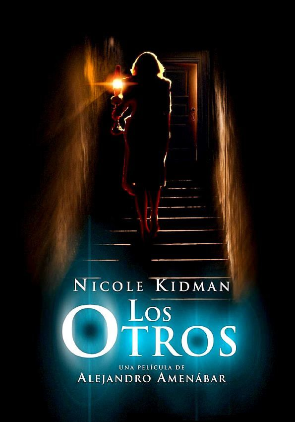

Introducción
Los otros (2001) es una aclamada obra maestra del terror psicológico y el suspenso gótico, escrita y dirigida por el cineasta hispano-chileno Alejandro Amenábar y protagonizada por una brillante Nicole Kidman. La trama se ambienta en 1945, inmediatamente después del fin de la Segunda Guerra Mundial, en una enorme y lúgubre mansión aislada en la Isla de Jersey. Allí, una mujer profundamente religiosa llamada Grace cría sola a sus dos pequeños hijos, quienes padecen una extraña enfermedad que los hace fotosensibles: la luz del sol los dañaría gravemente. El estricto orden y la oscuridad total en la que viven se ven alterados con la llegada de tres misteriosos sirvientes y una serie de eventos inexplicables que llevan a la familia a sospechar que no están solos en la casa.A diferencia de los filmes de terror contemporáneos basados en monstruos o efectos digitales sangrientos (gore), la película destaca por un estilo clásico y minimalista. Construye una atmósfera asfixiante apoyándose puramente en la iluminación de las velas, los crujidos de la madera, la niebla perpetua y la magnífica interpretación de su elenco para mantener al espectador en un estado de tensión absoluta hasta su legendario e inolvidable giro final.